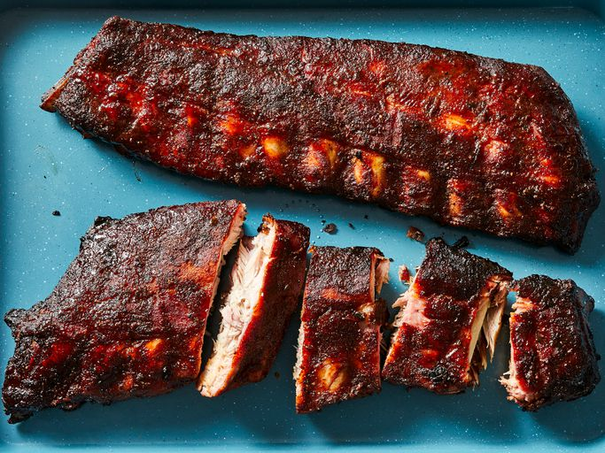

Ribs

Description
I always have a craving for ribs, even in the winter, so this recipe gives me the option even when I don't have the time or a barbecue.
You will need an Instant Pot, but they're worth it. Even just for these ribs. Get your favourite sauce ready!
Ingredients
- 1 rack of pork back ribs
- Liquid, such as beer, chicken broth or apple juice
- Salt
- Black pepper
- Paprika
- Yellow mustard
- Barbecue sauce
- Garlic Powder
Steps
- On a cutting board, remove the membrane from the back of the ribs
- Coat the ribs in mustard
- Apply enough salt, pepper, paprika and garlic powder to season the meat
- In the Instant Pot, pour a cup of your chosen liquid inyo the bottom
- Place the trivet into the Instant Pot, and place the ribs on top of the trivet
- Close the Instant Pot, set it to pressure cook and set the timer to 30 minutes
- After the timer has finished, use the quick release pressure valve and wait until the pressure has finished releasing
- Place the ribs on a oven tray, apply barbecue sauce
- Place the ribs under the broiler for a about 2 minutes
- After taking the ribs out of the oven, cut the ribs individually